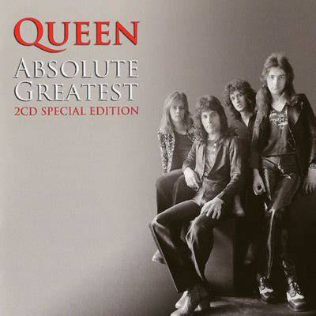

歌曲中的节奏
《We Will Rock You》是一首Queen乐队创作并演唱的一首经典的摇滚歌曲，相信你一定听过它的旋律，下面是它的音频示例：

它的经典律动可以简化为“咚、咚、啪”：前两个重击为踩踏，第三个重音为拍手，这就是这首曲目的经典动机。你可以在下面的音轨中写入这个动机并循环播放，或者调节 BPM、点亮或关闭方块，感受动机如何形成歌曲的记忆点。
BPM
60
提示：点击 / 拖动标尺可移动播放线；Clear 只清空方块，不会打断播放。在上方的音轨中填入“咚、咚、啪”的节奏吧，如果不能解决，可以点下方的按钮填充示例。